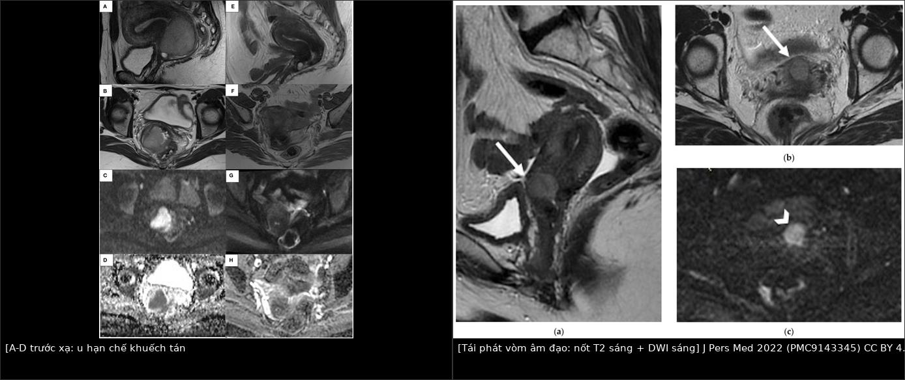
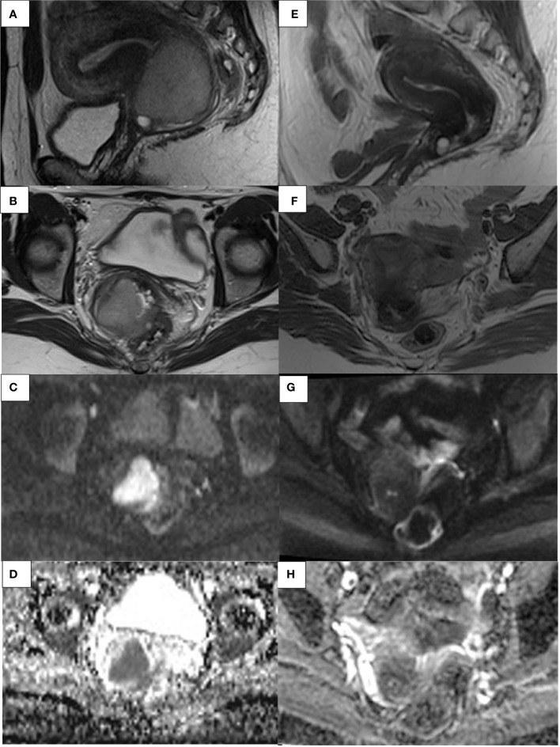
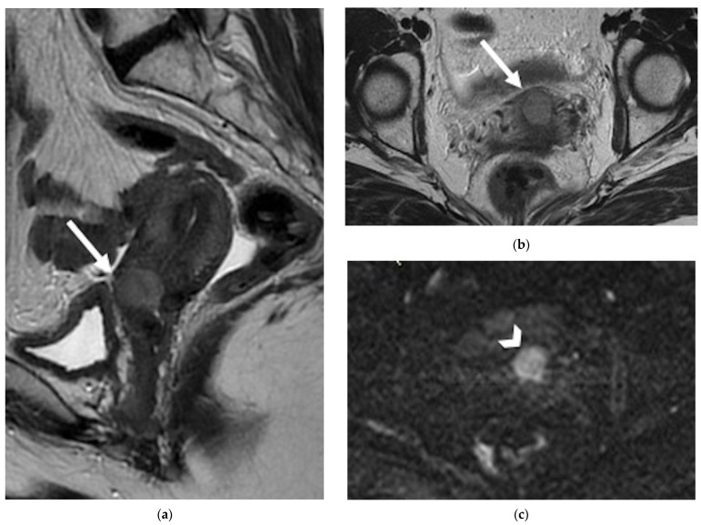

1626 — Tái phát tại vòm âm đạo sau xạ trị ung thư cổ tử cung / Vaginal vault recurrence after radiotherapy for cervical cancer
Tags: pattern:tai-phat pattern:hang-khuech-tan pattern:xo-hoa-sau-xa vung:am-dao vung:tieu-khung vung:bang-quang score:SCC-Ag score:FIGO-2018 protocol:MRI-tieu-khung-DWI protocol:PET-CT incidentaloma:xo-hoa-vom-am-dao
Mức chắc chắn (certainty): tổng hợp y văn (literature synthesis) — gồm 2 tổng quan hình ảnh có số liệu gộp (Miccò M et al., J Pers Med 2022, PMC9143345; Ciulla S et al., Front Oncol 2022, PMC9710522), 3 nghiên cứu chẩn đoán có cỡ mẫu rõ (Kitajima K et al., PLoS One 2015, PMC4309401; Lucas R et al., Diagn Interv Radiol 2015, PMC4557318; Peng NJ et al., Diagnostics 2020, PMC7555056), 1 tổng quan phẫu thuật (Ubinha ACF et al., Cancers 2024, PMC10886894) và 1 đoàn hệ tiền cứu xạ lại (Wang K et al., J Gynecol Oncol 2025, PMC11964967). Không có ca nguyên văn của nhóm; 3 ca trong mục (6) là ca của các bài gốc, ghi rõ nguồn từng ca. Chỗ hai nguồn lệch nhau (giá trị ADC, tỷ lệ tái phát) được ghi là mâu thuẫn nguồn, không chọn bừa.
1. Tổng quan bệnh học – cơ chế hình ảnh
- Định nghĩa tách đôi quyết định điều trị: tái phát (recurrence) = u mọc lại ≥ 6 tháng sau khi đã đạt đáp ứng hoàn toàn (complete response); u còn lại < 6 tháng sau kết thúc xạ trị gọi là bệnh tồn dư/bệnh dai dẳng (residual/persistent disease) (Miccò M et al. 2022). Hai nhóm này khác nhau về sinh học và về lựa chọn cứu vãn: tồn dư sớm thường được mổ cứu vãn sau khi xác nhận mô học; tái phát muộn mới có chỗ cho xạ lại, mổ vét tiểu khung (pelvic exenteration) hoặc điều trị hệ thống.
- Dịch tễ (các con số không đồng nhất — ghi nguyên vẹn): khoảng 30–50% bệnh nhân ung thư cổ tử cung (cervical cancer — CC) giai đoạn tiến xa tái phát trong 5 năm đầu (Ciulla S et al. 2022); tái phát sau mổ triệt căn ~27%, sau hóa–xạ đồng thời (concurrent chemoradiotherapy — CCRT) ~32%; 30–45% các tái phát là trung tâm – tiểu khung (central-pelvic), tức có thể nằm đúng ở vòm âm đạo (Miccò M et al. 2022). Trong một loạt 327 phụ nữ tái phát, vị trí hay gặp nhất là vòm âm đạo và vùng tiểu khung (dẫn trong Miccò M et al. 2022).
- TẠI SAO vòm âm đạo là "điểm mù" sau xạ trị: mô đã xạ giảm mật độ tế bào, tăng collagen/xơ, giảm nước tự do trong khoảng gian bào → trên T2W mô xơ tối, trên DWI b cao tối, trên bản đồ ADC sáng. U tái phát thì ngược lại: tế bào đặc, tỷ lệ nhân/nhân tương cao làm nước bị chặn → DWI b cao sáng + ADC tối. Vì vậy ADC mới là thứ tách "xơ" khỏi "u", còn T2 một mình không đủ: sau xạ, T2W đơn thuần có tỷ lệ dương tính giả tới 50%, độ nhạy/độ đặc hiệu 80%/55% cho tồn dư (Vincens et al., dẫn trong Ciulla S et al. 2022).
- Con số định lượng của DWI/ADC: nghiên cứu dọc cho thấy ADC giữa đợt xạ ở người sống còn cao hơn người tử vong: 1,55 vs 1,36 × 10⁻³ mm²/s, chênh 14% (Somoye et al., dẫn trong Ciulla S et al. 2022). Quan trọng — không có ngưỡng ADC tuyệt đối dùng chung: Lucas R et al. (2015) nêu rõ ADC phụ thuộc tham số chuỗi xung và từng hãng máy, nên trong nghiên cứu của họ DWI chỉ được đọc định tính (sáng/không sáng so với cơ tử cung). Muốn dùng ADC định lượng thì phải chuẩn hóa theo máy và lấy tỷ số ADC u/ADC cơ cùng một lần chụp — chưa có ngưỡng được xác nhận đa trung tâm, ghi là "chưa rõ — cần tra".
- TẠI SAO T2 + DWI mạnh hơn T2 + DCE: thuốc cản quang ngấm cả vào viêm, hoại tử, xơ đang viêm sau xạ, nên DCE mất đặc hiệu trong 5 tháng đầu sau xạ (Kinkel et al.: trong 5 tháng đầu, viêm do xạ ngấm sớm giống tái phát). Dù vậy, khi phân tích đường cong tín hiệu–thời gian, DCE vẫn nâng đặc hiệu từ 22% lên 67% và độ chính xác từ 68% lên 83% sau xạ (Kinkel et al., dẫn trong Kitajima K et al. 2015). Đỉnh ngấm của u 45–90 giây sau tiêm.
- Hiệu năng thực nghiệm (đọc kèm cỡ mẫu, đừng biến thành quy luật):
- Kitajima K et al. (2015), 62 bệnh nhân nghi tái phát trong tiểu khung: T2W đơn thuần Se 55,0% / Sp 81,8% / Acc 64,5% / AUC 0,753; T2W + DWI 80,0% / 77,3% / 79,0% / 0,838; T2W + DWI + DCE 80,0% / 90,9% / 83,9% / 0,862. DWI làm tăng độ nhạy và AUC có ý nghĩa so với T2W đơn thuần (p < 0,01), nhưng không khác biệt có ý nghĩa so với thêm DCE.
- Lucas R et al. (2015), 38 phụ nữ (36 ca có tái phát được chứng minh mô học): T2W/DWI PPV 100%, độ chính xác 92,1%, chỉ 3 âm tính giả; T2W/DCE 80%; T2W đơn thuần 73,6% (độ nhạy 77,8%). Độ nhạy của T2W/DWI 91,7% so với T2W/DCE 84,8%. Tác giả cũng nêu T2W/DWI không thua kém bộ đầy đủ T2W+DWI+DCE.
- Một loạt 30 bệnh nhân ung thư phụ khoa (dẫn trong Kitajima K et al. 2015): MRI gồm DWI nhạy hơn FDG-PET/CT cho tái phát tại chỗ (88% vs 63%), kém hơn cho hạch (63% vs 88%) và gieo rắc phúc mạc (60% vs 80%).
- PET/CT và SCC-Ag — hai công cụ khác nhau, đừng thay thế nhau: trong 88 bệnh nhân ung thư biểu mô vảy (squamous cell carcinoma — SqCC) nghi tái phát, FDG-PET/CT: Se 98,2% / Sp 90,9% / Acc 95,5%, còn SCC-Ag ngưỡng 1,5 ng/mL: Se 87,3% / Sp 57,6% / Acc 76,1% (Peng NJ et al. 2020). Tỷ lệ tái phát thực sự 77,4% khi SCC-Ag ≥ 1,5 so với 26,9% khi SCC-Ag không tăng (p < 0,001). Ngưỡng SCC-Ag theo Oh et al. (dẫn trong cùng bài): 1,0 ng/mL → Se 92,5%/Sp 50,3%; 1,5 → 86,3%/85,0%; 2,0 → 80,2%/94,6%; 2,5 → 73,1%/97,7%; 3,0 → 67,8%/98,9% — càng cao càng đặc hiệu, không có ngưỡng "vàng".
- Giá trị tiên lượng của PET: trong 54 ca tái phát có PET dương, MTV (metabolic tumor volume) và TLG (total lesion glycolysis) phân tầng sống còn có ý nghĩa (OS: 16/27 vs 1/27, p < 0,001 cho TLG), còn SUVmax chỉ có ý nghĩa đơn biến (p = 0,018) (Peng NJ et al. 2020). Vì vậy đừng dùng một ngưỡng SUVmax để chẩn đoán tái phát.
2. Mẫu hình + chẩn đoán phân biệt theo vị trí (gamut)
Trục A — theo vị trí, vì vị trí quyết định khả năng mổ cứu vãn:
- Vòm âm đạo đơn thuần (central, vault-only): mất đường tối – mỏng – thẳng của thành âm đạo trên T2W, thay bằng nốt/mảng trung gian–tăng tín hiệu hạn chế khuếch tán. Đây là nhóm có khả năng mổ vét tiểu khung R0 cao nhất nếu u ≤ 3 cm và không xâm lấn bàng quang/trực tràng.
- Cạnh âm đạo – dây chằng ngang cổ tử cung (parametrial): mô mềm thay mỡ cạnh cổ tử cung/vòm; mất mặt phẳng mỡ với cơ nâng hậu môn. Lan ra thành chậu khi u cách cơ bịt trong/cơ hình lê < 3 mm (tiêu chuẩn MRI, PPV tới 88%, NPV tới 97% — Miccò M et al. 2022).
- Phía trước (bàng quang – niệu đạo): u thay lớp tối của thành bàng quang; rò âm đạo–bàng quang là đường dịch tăng tín hiệu T2 (xem 582). Xâm lấn tam giác bàng quang gây ứ nước thận — dấu hiệu gián tiếp hay bị bỏ.
- Phía sau (trực tràng – cơ thắt hậu môn): mất mặt phẳng mỡ âm đạo–trực tràng; u cách cơ nâng hậu môn/cơ mu–trực tràng < 3 mm là tiêu chuẩn xâm lấn cơ (Miccò M et al. 2022). Tỷ lệ tái phát âm đạo–trực tràng 17,3% (dẫn trong Miccò M et al. 2022).
- Hạch: hạch chậu trục ngắn > 8 mm là ngưỡng gợi ý mới (so với ngưỡng cũ 10 mm) (Miccò M et al. 2022); 38% ca tái phát trung tâm có kèm hạch chậu (Walsh et al., dẫn trong cùng bài); hạch cạnh động mạch chủ (para-aortic) gặp 3–10,5% sau xạ chậu triệt căn.
- Xa: phổi hay gặp nhất; gan 1/3 ca tái phát; xương 15–29% (Miccò M et al. 2022).
Trục B — gamut "nốt/mảng ở vòm âm đạo sau xạ" (theo bệnh bắt chước):
- Xơ hóa sau xạ (post-radiation fibrosis): dải tối, đều, không hạn chế khuếch tán — không phải u.
- Viêm/hoại tử sau xạ: ngấm thuốc mạnh, có thể sáng trên DWI b cao, nhưng ADC không tối (T2 shine-through) — ca minh họa của Lucas R et al. 2015 (Hình 2) đúng kiểu này: mô học chỉ là viêm.
- Hẹp âm đạo – ứ máu âm đạo (hematocolpos): dịch T1 sáng, T2 sáng, không ngấm thuốc, không hạn chế khuếch tán; có thể che mất nốt tái phát phía trên (xem 562).
- Nốt viêm quanh chỉ / u hạt dị vật (suture granuloma): nốt nhỏ ngay dưới niêm mạc, ngấm thuốc, không hạn chế khuếch tán; bối cảnh mổ < 6 tháng.
- Rò âm đạo–bàng quang/trực tràng: đường dịch–khí; nhưng mô mềm đặc quanh đường rò mới là dấu hiệu u (xem 582).
- Ung thư niệu mạc thứ phát sau xạ: đái máu muộn, tổn thương trong lòng bàng quang, không phải mô mềm vòm âm đạo (xem 1608).
3. Bảng so sánh phân biệt (ma trận đối chiếu)
| Thực thể (entity) | Hình ảnh điển hình | Chốt vào (rule-in) | Chốt loại (rule-out) | Gợi ý xác nhận |
|---|---|---|---|---|
| Tái phát vòm âm đạo | Mất đường tối mỏng của vòm; nốt/mảng T2 trung gian–sáng, DWI b 1000 sáng, ADC tối, ngấm thuốc sớm 45–90 giây | Ổ hạn chế khuếch tán thật (ADC tối) + phá vỡ cấu trúc vòm + ≥ 6 tháng sau xạ | Không hạn chế khuếch tán, bờ đều, không phá vỡ vòm → xơ/viêm | Sinh thiết nhắm vào phần ADC tối; PET/CT toàn thân trước khi mổ |
| Xơ hóa sau xạ | Dải/mảng T2 tối, co kéo, DWI tối, ADC sáng; đối xứng, không có khối | ADC sáng + ổn định theo thời gian | ADC tối + to ra khi chụp lại → nghĩ tái phát | So phim cũ; chụp lại 3–6 tháng nếu lâm sàng yên |
| Viêm/hoại tử sau xạ | Ngấm thuốc mạnh, phù, DWI sáng nhưng ADC không tối (T2 shine-through) | ADC không tối + bối cảnh < 5–6 tháng sau xạ | ADC tối khu trú trong khối đặc → tái phát | Theo dõi ngắn hạn; tránh sinh thiết mù vùng hoại tử |
| U tồn dư (< 6 tháng) | Như tái phát nhưng xuất hiện sớm; thường còn u nguyên phát chưa tan hết | Còn mô u liên tục với vị trí u cũ trong 6 tháng | Đã có đáp ứng hoàn toàn rồi mới mọc lại → tái phát | Mô học trước khi mổ cứu vãn (khuyến cáo: chỉ mổ khi xác nhận mô học) |
| Hẹp âm đạo / ứ máu âm đạo | Dịch T1 sáng, T2 sáng, vòm bị đẩy; thành âm đạo dày đều | Tín hiệu dịch/máu cũ, không ngấm thuốc | Mô đặc hạn chế khuếch tán trong lòng → u | Khám + siêu âm; nong/dẫn lưu nếu ứ (xem 562) |
| Nốt viêm quanh chỉ | Nốt nhỏ dưới niêm mạc, ngấm thuốc, không hạn chế khuếch tán, sát vết mổ | Bờ đều, không ADC tối, bối cảnh hậu phẫu gần | To dần + ADC tối → không phải viêm | Theo dõi 6–12 tuần; cắt chỉ nếu lộ |
| Rò âm đạo–bàng quang/trực tràng | Đường dịch–khí T2 sáng giữa 2 cơ quan; thành dày | Đường rò + khí trong ổ dịch | Mô mềm đặc đầu đường rò → nghi u xâm lấn | MRI T2 fat-sat + sau tiêm; nội soi (xem 582) |

Trái: 41 tuổi, trước xạ (A–D) u cổ tử cung lan 1/3 trên âm đạo, DWI sáng + ADC tối; sau hóa–xạ (E–H) mô xơ T2 tối, DWI tối, ADC không tối = đáp ứng hoàn toàn. Phải: 42 tuổi sau hóa–xạ, nốt T2 sáng ở vòm âm đạo trước (a, b) có DWI sáng (c) = hạn chế khuếch tán, tái phát. Nguồn: Ciulla S et al., Front Oncol 2022 (PMC9710522) và Miccò M et al., J Pers Med 2022 (PMC9143345), CC BY 4.0; ảnh ghép letterbox bằngtools/make_composite.py, không crop/kéo giãn.
Đọc đúng "hạn chế khuếch tán" (restricted diffusion)
- Cần cả hai: sáng trên DWI b cao và tối trên ADC. Sáng DWI đơn thuần có thể do T2 shine-through (hoại tử, dịch đặc, máu cũ), do artifact cảm ứng từ ở ranh giới không khí–mô (trực tràng, bàng quang), hoặc do dòng chảy.
- Đo ADC nên đặt ROI trong phần đặc nhất, tránh trung tâm hoại tử, và ghi kèm ADC cơ vùng chậu làm mẫu nội kiểm — cùng một lần chụp, cùng máy.
- Ảnh DWI b 0 không dùng để chẩn đoán; b 600–1000 s/mm² là dải ESUR khuyến nghị cho cổ tử cung (Miccò M et al. 2022: b 0–1000; Lucas R et al. 2015 dùng 0/600/1000).
4. Protocol chụp + hệ phân độ/điểm chuẩn hóa
Chỉ định: (1) triệu chứng nghi tái phát (ra máu âm đạo, đau chậu, đau lan chân, phù chân, ho); (2) SCC-Ag tăng đơn độc; (3) tổn thương không rõ trên CT/khám; (4) trước khi quyết định mổ vét tiểu khung (bắt buộc loại di căn xa).
MRI tiểu khung (ưu tiên số một cho tái phát tại chỗ):
- T2W độ phân giải cao, lát 3–4 mm, FOV 20–24 cm; mặt phẳng para-axial và para-coronal theo trục cổ tử cung khi còn tử cung; sau mổ cắt tử cung thì dùng mặt phẳng thuần sagittal/axial/coronal (ESUR 2021, dẫn trong Ciulla S et al. 2022).
- DWI + ADC bắt buộc: ít nhất một mặt phẳng para-axial; b 0/600/1000 s/mm² (Kitajima, Lucas); đọc DWI cùng ADC, không đọc riêng.
- DCE không bắt buộc (ESUR: chủ yếu nghiên cứu) nhưng hữu ích khi DWI nhiễu hoặc có chống chỉ định gadolinium; đọc 45–90 giây sau tiêm.
- Thời điểm: chụp ≥ 6 tháng sau kết thúc xạ khi cần phân biệt xơ/viêm với tái phát; NCCN đề nghị PET/CT hoặc CT ngực–bụng–chậu 3–6 tháng sau CCRT, và MRI có cản quang 3–6 tháng (dẫn trong Ciulla S et al. 2022).
- Trước mổ vét tiểu khung: MRI mô tả quan hệ với thành chậu, niệu quản, thần kinh; PET/CT loại di căn xa (tổng quan Ubinha ACF et al. 2024).
PET/CT toàn thân: chỉ định khi nghi tái phát ngoài tiểu khung, khi SCC-Ag tăng mà MRI âm, hoặc trước mổ cứu vãn. Hiệu năng cho tái phát: Se 98,2% / Sp 90,9% (Peng NJ et al. 2020); gộp 17 nghiên cứu/707 ca: Se 97%, Sp 81% (dẫn trong cùng bài). Lưu ý dương tính giả đã gặp: ung thư nguyên phát thứ hai (niệu mạc, đa u tủy) và áp-xe ở đường rò âm đạo–trực tràng.
Theo dõi SCC-Ag (chỉ cho SqCC): ngưỡng thực hành 1,5 ng/mL; dùng xu hướng tăng liên tiếp thay vì một lần vượt ngưỡng. Bảng ngưỡng Oh et al. ở mục (1) cho thấy đánh đổi độ nhạy/đặc hiệu — chọn ngưỡng theo mục đích (sàng lọc hay xác nhận).
Hệ phân độ liên quan: FIGO 2018 cho giai đoạn ban đầu (IB3–IVA = ung thư cổ tử cung tiến xa tại chỗ — LACC); không có RADS riêng cho tái phát cổ tử cung — dùng cấu trúc báo cáo vị trí + kích thước 3 chiều + quan hệ cơ quan + hạch theo trục ngắn + PET. Kích thước u ≤ 3 cm, trung tâm là nhóm tiên lượng tốt nhất cho mổ vét; mỗi 1 cm tăng kích thước làm tăng 11% nguy cơ diện cắt dương tính (Smith et al., dẫn trong Ubinha ACF et al. 2024).
flowchart TD
A[Nghi tai phat vom am dao sau xa tri] --> B[MRI tieu khung: T2 + DWI + ADC]
B --> C{Co o han che khuech tan that?}
C -->|Khong| D[Xo hoa hoac viem sau xa: theo doi 3-6 thang]
C -->|Co| E[PET/CT toan than + SCC-Ag]
E --> F{Di can xa hoac hach ngoai chau?}
F -->|Co| G[Dieu tri he thong, khong mo vet]
F -->|Khong| H{U trung tam va kich thuoc duoi 3 cm?}
H -->|Co| I[Mo vet tieu khung R0 neu mo hoc xac nhan]
H -->|Khong| J[Xa lai hoac hoa-xa tri trieu chung]
I --> K[Theo doi 3 thang: MRI + SCC-Ag]
J --> K
Số liệu để tư vấn (không hứa hẹn):
- Mổ vét tiểu khung (pelvic exenteration): sống còn toàn bộ 5 năm ~49%, 10 năm 39%; R0 đạt 66% trong loạt 282 ca (Schmidt et al., dẫn trong Ubinha ACF et al. 2024). Sống còn theo diện cắt: dương tính 21 tháng, âm tính sát < 3 mm 32 tháng, ≥ 3 mm 111 tháng (Martin et al., dẫn trong cùng bài). Biến chứng 25–94% (biến chứng nặng 23–~70%); tử vong chu phẫu hiện đại 1,9–2% (Matsuo et al., 2.647 ca).
- Khoảng thời gian tái phát là yếu tố tiên lượng mạnh: sống còn 5 năm 16,8% nếu tái phát < 2 năm**, **28%** nếu 2–5 năm, **83,2%** nếu **> 5 năm (Marnitz et al., dẫn trong Ubinha ACF et al. 2024). Hạch cạnh động mạch chủ dương: sống còn 5 năm 17% so với 45% khi chỉ có hạch chậu dương.
- Xạ lại áp sát (interstitial brachytherapy — ISBT) có hỗ trợ template 3D in): 45 ca, tỷ lệ đáp ứng 66,7%; LPFS 1/2/5 năm 41,1%/30,0%/25,7%; OS trung vị 23,2 tháng, OS 1/2/5 năm 76,3%/49,5%/34,0%; độc tính độ 3–4: 20,0% (cấp 8,9%, muộn 11,1%, gồm 3 ca rò), không có độ 5 (Wang K et al. 2025). Liều cao hơn tốt hơn: HR-CTV D90 ≥ 45 Gy cho LPFS 1 năm 69,4% vs 19,6% — đây là biến số kỹ thuật, không phải biến số hình ảnh.
5. Biến thể bình thường và cạm bẫy
- "Vòm âm đạo bình thường sau xạ" không phải lúc nào cũng mỏng – tối – thẳng: xơ hóa có thể làm vòm dày, co kéo, dính trực tràng/bàng quang; đây là biến thể sau điều trị, không phải u, miễn không hạn chế khuếch tán và không to lên.
- Cửa sổ 5–6 tháng: trong 5 tháng đầu, viêm do xạ ngấm thuốc sớm và có thể sáng trên DWI; đọc MRI quá sớm dễ overcall. Ngược lại, u tồn dư < 6 tháng là bệnh dai dẳng, không phải "tái phát" — đừng dùng từ sai vì nó đổi cả chiến lược.
- T2 shine-through: ca của Lucas R et al. 2015 cho thấy một tổn thương sáng trên DWI b 1000 nhưng không tối trên ADC, mô học chỉ là viêm — nếu chỉ nhìn DWI sẽ mổ oan.
- Hẹp âm đạo che tổn thương: hẹp/ứ máu âm đạo sau xạ (xem 562) làm vòm bị đẩy và niêm mạc không quan sát được; phải đọc thành âm đạo và mô cạnh âm đạo, không chỉ lòng âm đạo.
- Satisfaction of search: 38% tái phát trung tâm có hạch chậu; hạch cạnh động mạch chủ 3–10,5%; xương 15–29%. Thấy nốt ở vòm rồi dừng lại là lỗi hay gặp.
- Gãy xương cùng do thiếu xương sau xạ (insufficiency fracture) giả di căn: đường gãy T1 tối, T2/STIR sáng, không phá vỡ vỏ, thường đối xứng cánh xương cùng — khác di căn phá vỡ vỏ + khối mô mềm (Miccò M et al. 2022).
- Dương tính giả PET/CT: áp-xe ở đường rò âm đạo–trực tràng, ung thư nguyên phát thứ hai (niệu mạc, đa u tủy), viêm sau xạ — luôn đối chiếu MRI và mô học trước khi đổi điều trị (Peng NJ et al. 2020).
- Sinh thiết mù vùng xơ: mô xơ nhiều có thể cho âm tính giả (tế bào u bị xơ vây); nếu hình ảnh và SCC-Ag thuyết phục, sinh thiết nhắm vào phần ADC tối hoặc lặp lại dưới hướng dẫn hình ảnh, đừng kết luận "không tái phát" chỉ vì một mẫu mô xơ.
6. Tự lượng giá — Blind Quiz
Ba ca dưới đây lấy từ ba bài gốc khác nhau, khác máy chụp và khác bệnh nhân — không so sánh trực tiếp giữa các ảnh.
Ca 1 — 41 tuổi, ung thư cổ tử cung xâm lấn, chụp MRI trước và sau hóa–xạ đồng thời. Nhìn 8 ô ảnh, mô tả trước khi mở đáp án.

- Gợi ý lâm sàng: u lan 1/3 trên âm đạo và thành trước trực tràng; chụp lại sau CCRT để đánh giá đáp ứng.
- Câu hỏi: (1) Ô nào là DWI, ô nào là ADC? (2) Sau xạ còn ổ hạn chế khuếch tán không? (3) Kết luận đáp ứng?
Bấm để hiện đáp án (findings + chẩn đoán)
- A–D (trước xạ): u cổ tử cung lớn lan 1/3 trên âm đạo; C = DWI b cao sáng, D = ADC tối → hạn chế khuếch tán thật.
- E–H (sau CCRT): mô xơ T2 tối, G = DWI tối, H = ADC sáng — không còn ổ hạn chế khuếch tán tương ứng khối u.
- Chẩn đoán: đáp ứng hoàn toàn (complete response) về hình ảnh; không có bằng chứng tồn dư tại vòm.
- Cơ chế: xơ hóa giảm mật độ tế bào và tăng khoảng gian bào → nước khuếch tán tự do → ADC sáng; đây chính là lý do phải có ADC, vì T2 đơn thuần không phân biệt được xơ với u.
- Lưu ý: H có vùng sáng cạnh trực tràng/bàng quang do artifact khí–mô, không phải u.
- Nguồn ảnh: Ciulla S et al., Front Oncol 2022;12:1003930 (PMC9710522), Fig. 5, CC BY 4.0.
Ca 2 — 42 tuổi, tiền sử ung thư cổ tử cung đã hóa–xạ, khám vì ra máu âm đạo. MRI 6 tháng sau điều trị.

- Câu hỏi: Mô tả bất thường ở vòm âm đạo trước? Dấu hiệu nào tách u với xơ? Ba chẩn đoán phân biệt? Bước tiếp theo?
Bấm để hiện đáp án (findings + chẩn đoán)
- (a) Sagittal T2W: mất đường tối mỏng của thành âm đạo trước, thay bằng nốt trung gian–tăng tín hiệu ở vòm (mũi tên). (b) Axial T2W: nốt cùng vị trí, bờ không đều. (c) DWI: nốt sáng rõ (đầu mũi tên).
- Chốt: nốt hạn chế khuếch tán phá vỡ cấu trúc vòm, xuất hiện sau 6 tháng — phù hợp tái phát tại vòm âm đạo.
- Phân biệt: xơ hóa sau xạ (không hạn chế khuếch tán, bờ đều), viêm/hoại tử sau xạ (ADC không tối), nốt viêm quanh chỉ (nhỏ, sát vết mổ, không ADC tối).
- Bước tiếp theo: PET/CT toàn thân loại di căn xa/hạch, sinh thiết nhắm phần DWI sáng để xác nhận mô học trước khi mổ cứu vãn; đánh giá khả năng R0 (kích thước, bàng quang, trực tràng, thành chậu).
- Nguồn ảnh: Miccò M et al., J Pers Med 2022;12(5):755 (PMC9143345), Fig. 2, CC BY 4.0.
Ca 3 — 78 tuổi, ung thư biểu mô vảy cổ tử cung 10 năm trước, SCC-Ag tăng 6,7 ng/mL, không triệu chứng.

- Câu hỏi: Ổ tăng chuyển hóa nằm ở đâu? Có phải tái phát tại vòm không? Vì sao vẫn mổ được?
Bấm để hiện đáp án (findings + chẩn đoán)
- Ảnh hợp cho thấy nốt tăng FDG 3,0 cm ở vùng trước xương cùng (presacral), SUVmax 5,2, không thấy ổ khác.
- Chẩn đoán: hạch tái phát vùng trước xương cùng (không phải tái phát tại vòm âm đạo) — ví dụ cho "tái phát vùng chậu" có thể nằm ngoài vòm.
- Vì sao mổ được: bệnh khu trú, đơn ổ, PET/CT loại di căn xa; sau cắt hạch bệnh nhân sống không bệnh > 10 năm. Trong loạt 88 ca, mổ được u tái phát khu trú → 62,5% còn sống so với 17,9% ở nhóm không mổ (p = 0,001).
- Bài học: SCC-Ag tăng đơn độc vẫn phải chụp toàn thân, và "tái phát vùng chậu" không đồng nghĩa "tái phát tại vòm".
- Nguồn ảnh: Peng NJ et al., Diagnostics 2020;10(9):657 (PMC7555056), Fig. 1, CC BY 4.0.
Bài liên quan chéo
- 577 – Theo dõi & phát hiện tái phát ung thư phụ khoa (khung theo dõi, RECIST, CA-125)
- 562 – Hẹp âm đạo sau xạ trị ung thư cổ tử cung (hẹp/ứ máu che tổn thương)
- 582 – Biến chứng tiêu hóa–niệu sau xạ trị phụ khoa (rò âm đạo, viêm trực tràng xạ)
- 1608 – Ung thư niệu mạc thứ phát sau xạ trị tiểu khung
- 1623 – Huyết khối tĩnh mạch buồng trứng sau sinh (đọc CT/MRI tiểu khung có cản quang)
Ảnh
1626_tai-phat-vom-am-dao_MRI_PMC9710522-Fig5-CCBY.jpg,1626_tai-phat-vom-am-dao_MRI_PMC9143345-Fig2-CCBY.jpg,1626_tai-phat-vom-am-dao_MRI_PMC9143345-Fig4-CCBY.jpg,1626_tai-phat-vom-am-dao_MRI_PMC9710522-Fig4-CCBY.jpg,1626_tai-phat-vom-am-dao_PETCT_PMC7555056-Fig1-CCBY.jpg,composite_xo-hoa-vs-tai-phat.jpg.- Nguồn + giấy phép từng ảnh:
images/CREDITS.md. Cả 3 bài nguồn ảnh đều CC BY 4.0 → được phép tạo ảnh ghép, giữ attribution.
Không dùng để chẩn đoán độc lập khi chưa có người hướng dẫn.